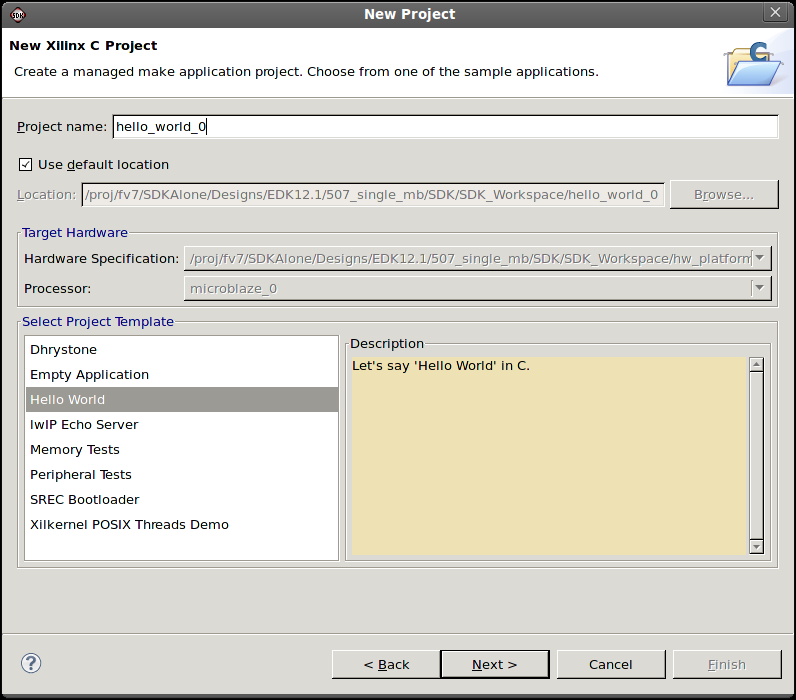
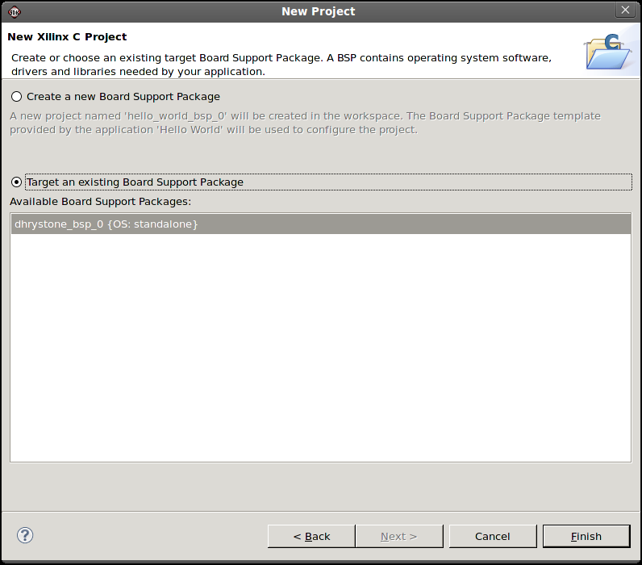

SDK application projects
In the New Xilinx C Application Project page of the New Project wizard, select a name for the project, the board support package, and the sample application. You can also specify a new path for your project by unselecting the Use default location checkbox and specifying the new path in the Location field.

The New Xilinx C Application Project page contains the following items:
| Name | Function |
|---|---|
| Project Name | In this field, specify the name of the project. |
| Use Default Location for Project | When this check box is selected, SDK creates the new project in the default workspace location. |
| Location | If Use Default Location for Project check box is not selected, use this field to specify the location where the project is to be created. |
| Hardware Specification | Displays the hardware platform for which you want to create an application. |
| Processor | Select the processor for which you want to create an application. |
| Select Project Template | Select from a list of sample applications for the software and hardware platform. |

The New Board Support Package page contains the following items:
| Name | Function |
|---|---|
| Create a new Board Support Package | Select this option if you want to create a new BSP for your application. |
| Target an existing Board Support Package | Select this option if you want to use an existing BSP in the workspace for your application. |
| Available Board Support Packages | Lists the available BSPs in the workspace. |
Copyright © 1995-2011 Xilinx, Inc. All rights reserved.